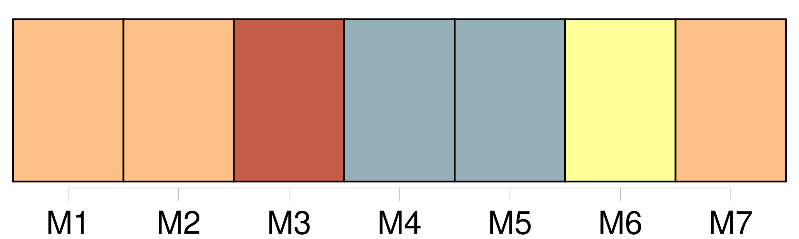
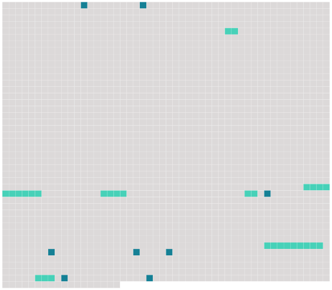

Longueur nb maillons : 14 mentions |
  |
Les souhaits de bon voyage ne manquèrent pas aux excursionnistes, et [on] les suivit des yeux, aussi longtemps qu' [on] put les apercevoir. [9 phrases] Quelle horrible nouvelle ils auraient à rapporter à [leurs compagnons] , le lendemain!! [45 phrases]
»
» [9 phrases]
» [1 phrases] [On] pensera certainement que tu as perdu la raison.
» [4 phrases] Leur retour fut salué avec des démonstrations de joie par [les autres naufragés] , [qui] écoutèrent avec beaucoup d'intérêt le récit de la découverte merveilleuse.
[Tous] connaissaient l'histoire du « Nautilus » et du capitaine Nemo, et au grand étonnement de Paul, lorsque Roger, sans beaucoup de préambules, proposa son plan de ville sous-marine, il ne rencontra pas l'opposition qu'il avait redoutée. |
 |
La ressource peut être téléchargée sur la page Ortolang
Si vous avez des questions ou vous voyez des erreurs, merci d'envoyer un mail à silvia.federzoni89@gmail.com
Site développé par S. Federzoni (contact)